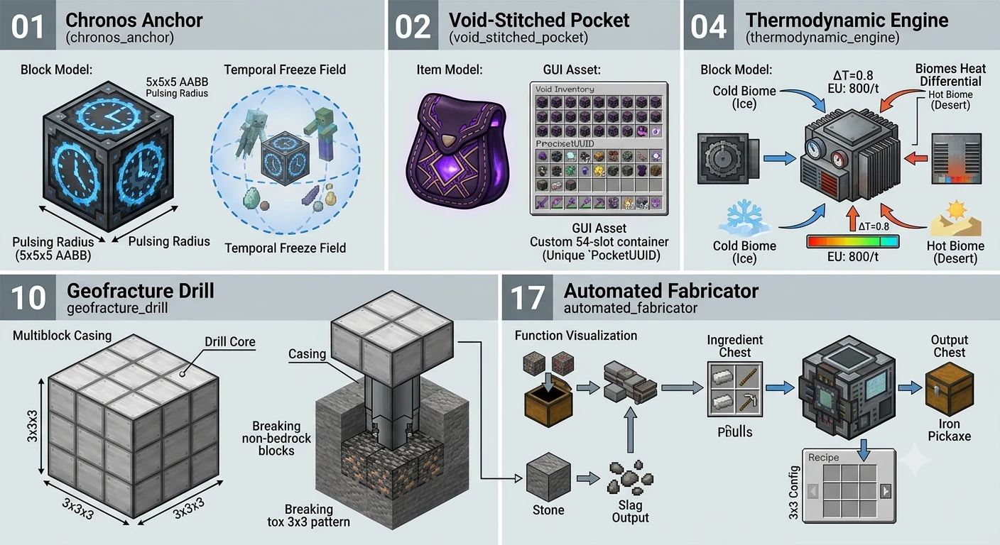
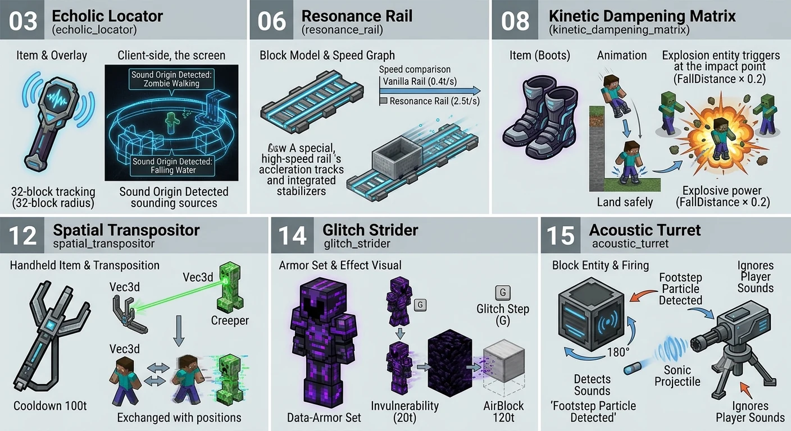
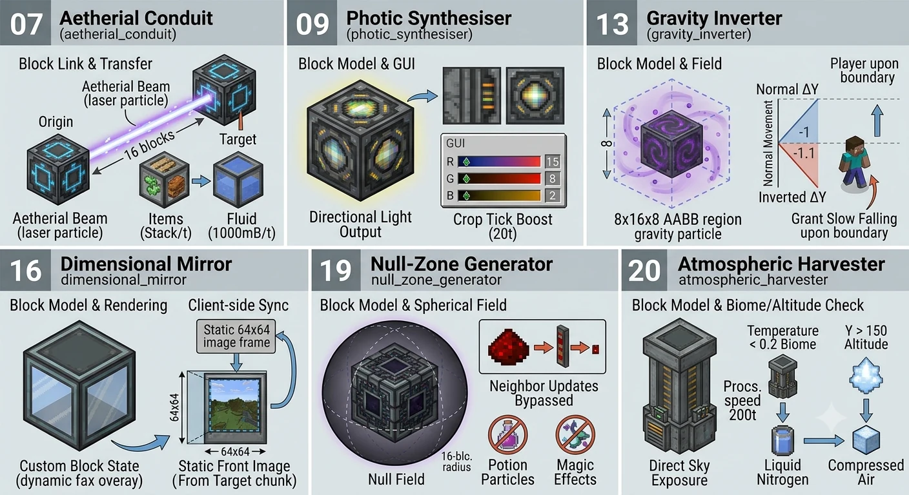

Próximamente
La próxima actualización
V4
20 módulos
V4 es la próxima gran actualización de este pack. Un bloque que detiene el tiempo, un localizador que dibuja el sonido a tu alrededor, un espejo que muestra otra dimensión: hay 20 módulos previstos. Esta página es un anuncio previo al lanzamiento y estará disponible por tiempo limitado.
Esta página reproduce música. El botón de arriba a la derecha la detiene cuando quieras.
Grupo 1
Máquinas y almacenamiento
Un ancla que congela el tiempo, una bolsa prácticamente sin fondo, un generador que vive de la diferencia de temperatura entre biomas, una perforadora que baja hasta la bedrock y un fabricador que saca los ingredientes del cofre de al lado y monta solo.

Grupo 2
Movimiento y equipo
Un localizador que perfila de dónde vino un sonido, raíles seis veces más rápidos que los de siempre, botas que convierten una caída en una explosión, una vara que te intercambia con lo que golpea, una armadura que atraviesa paredes y una torreta que gira hacia el ruido y dispara.

Grupo 3
Espacio y entorno
Un haz que mueve objetos y fluido dieciséis bloques, una lámpara que ajustas por color para hacer crecer cultivos, una región donde la gravedad va al revés, un espejo a otra dimensión, una esfera que apaga la redstone y la magia, y una torre que cosecha fluido del cielo.

Los veinte módulos
Numerados como en la especificación. Diecisiete están ilustrados; los tres restantes (Entropy Siphon, Biological Weaver, Sub-Zero Cryo-Cannon) llegarán después.
- 01Chronos Anchor
- 02Void-Stitched Pocket
- 03Echolic Locator
- 04Thermodynamic Engine
- 05Entropy SiphonIlustración pendiente
- 06Resonance Rail
- 07Aetherial Conduit
- 08Kinetic Dampening Matrix
- 09Photic Synthesiser
- 10Geofracture Drill
- 11Biological WeaverIlustración pendiente
- 12Spatial Transpositor
- 13Gravity Inverter
- 14Glitch Strider
- 15Acoustic Turret
- 16Dimensional Mirror
- 17Automated Fabricator
- 18Sub-Zero Cryo-CannonIlustración pendiente
- 19Null-Zone Generator
- 20Atmospheric Harvester
V4 no está publicada. Lo aquí escrito es un diseño en desarrollo y puede cambiar antes de salir. Lo que salga de verdad quedará registrado en el historial de cambios.